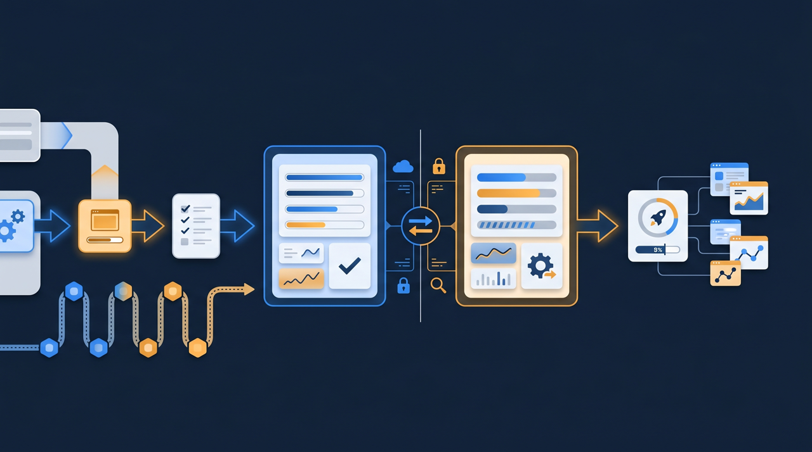
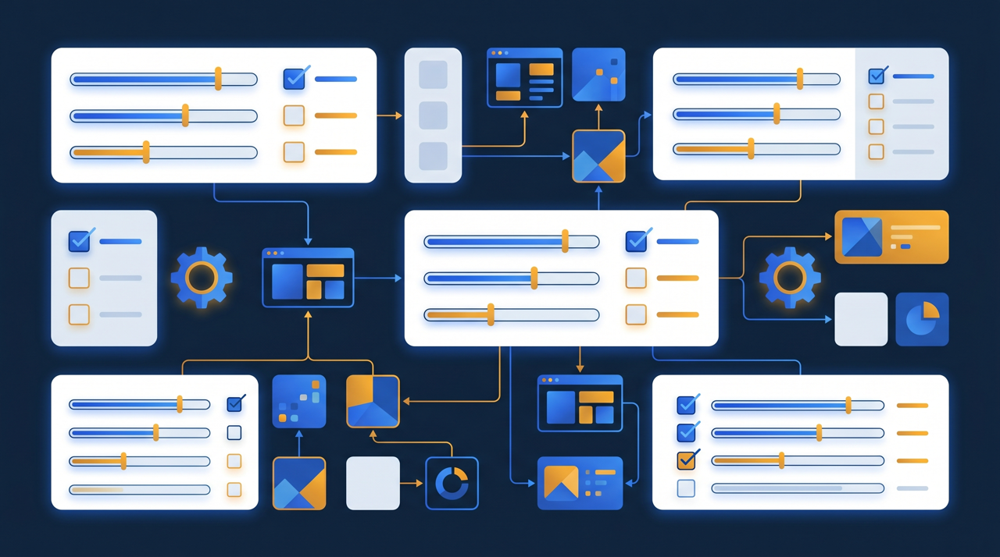
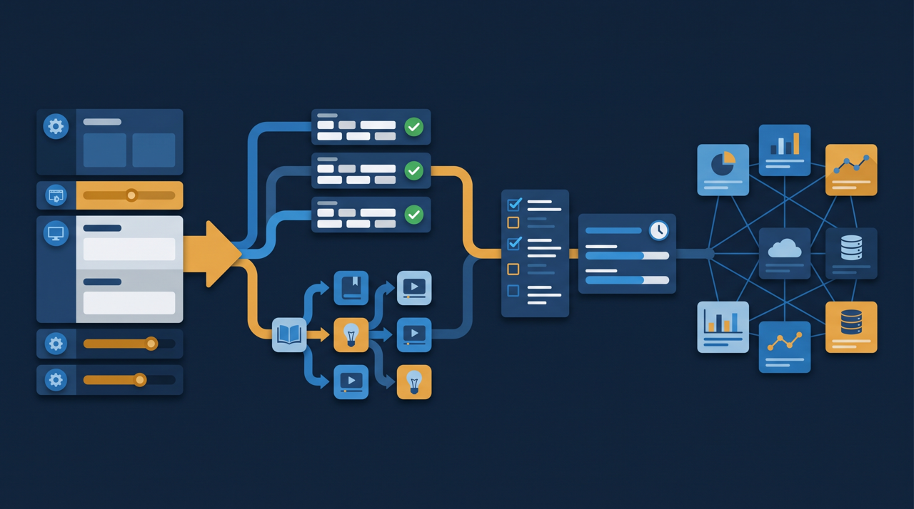

「研修の中身より、その準備と後始末のほうが大変なんです」——研修担当者から、こんな声をよく聞きます。受講者の名簿づくり、案内メール、受けていない人への催促、修了の集計。一つひとつは小さくても、積み重なると相当な時間です。この記事では、研修運用の効率化とは何かを整理しつつ、受講者登録や通知をどう自動化して担当者の工数を減らせるかを、実務目線でお話しします。

研修運用の効率化とは？対象は「中身」ではなく「事務」
研修運用の効率化と聞くと、研修の内容そのものを良くする話だと思われがちですが、ここで扱うのは少し違います。対象になるのは、研修にまつわる事務作業のほうです。受講者の登録、案内、リマインド、修了確認、記録の集計——こうした繰り返しの作業をどう軽くするか、というのが運用効率化のテーマになります。
なぜここを分けて考えるかというと、研修担当者の負担の多くが、実はこの事務作業に集中していることが多いからです。研修の中身を考える時間より、名簿を整えたり催促のメールを書いたりする時間のほうが長い、という会社は少なくありません。中身を磨きたくても、事務に追われて手が回らない。これは、もったいない状態ですよね。
厚生労働省の能力開発基本調査でも、計画的な教育訓練を実施している企業の状況が継続的に調べられていますが、研修を「実施し続ける」には、運用を回し続ける手間が伴います。一度きりなら手作業でもこなせますが、毎月・毎年と繰り返すなら、その手間を減らす仕組みがあるかどうかで、担当者の負担は大きく変わってきます。研修運用の効率化とは、この繰り返しの手間を仕組みに移していくこと、と言えます。
どこに時間が取られているのか——運用の作業を分解する
効率化を考える前に、まずはどこに時間が取られているのかを見える形にすると、手を打つ場所が分かります。研修運用の作業を分解すると、だいたい次のような流れになります。
- 受講者一覧の作成・更新（誰が対象かを整理する）
- 受講案内の作成・送信（いつ・何を・どこで受けるかを伝える）
- 未受講者の抽出・催促（受けていない人を探して声をかける）
- 修了状況の確認・集計（誰が完了したかをまとめる）
- 記録の保管（受講日や修了の証跡を残す）
この5つのうち、特に時間を食いやすいのが、受講者一覧の更新と、未受講者の催促です。対象者が入れ替わるたびに名簿を直し、研修を配るたびに受講状況を聞き取って、受けていない人を探して個別に連絡する。研修が10本あれば、この一連を10回繰り返すことになります。
ある建設業の会社では、安全教育を毎月実施していましたが、担当者がこの運用にほぼ専任で張りついていました。やっていることの大半は、各現場に受講状況を確認する電話と、未受講者へのメール。研修の中身を見直す余裕はまったくなかったそうです。作業を分解してみると、こうした「人を探して催促する」部分が、想像以上に時間を奪っていることが分かります。
自動化できる作業、人が関わるべき作業を分ける
ここで大事なのが、運用のすべてを機械に任せるわけではない、ということです。定型の繰り返し作業は自動化に向きますが、受講者一人ひとりへの個別のフォローまで機械任せにすると、かえって冷たい研修になってしまいます。何を自動化し、何を人が担うかを分けて考える、という発想が必要なんですよね。
自動化に向くのは、ルールが決まっている繰り返し作業です。受講者の登録、決まったタイミングでの案内、未受講者へのリマインド、修了状況の集計。これらは「こういう条件のとき、こうする」がはっきりしているので、仕組みに任せやすい。一方で、つまずいている受講者への声かけや、研修の内容に関する質問への対応は、人が関わってこそ意味があります。
つまり、自動化は人の仕事を奪うのではなく、人がやらなくていい作業から人を解放する、と捉えると分かりやすいです。事務に追われていた時間を、受講者の支援や研修の改善といった、人にしかできない部分に振り向けられるようになる。そう考えると、自動化はむしろ研修の質を上げる方向に働くわけです。

受講者登録を自動化する
では、具体的にどう自動化するのかを見ていきましょう。まずは受講者登録です。
手作業で運用していると、新しく入った人を名簿に追加し、異動した人を移し、退職した人を外す、という更新を人手で行うことになります。これを研修ごとに繰り返すと、どの名簿が最新なのか分からなくなりがちです。
学習管理システム（LMS）を使うと、受講者の情報を一括で取り込んだり、所属に応じて受講対象を振り分けたりできるものがあります。たとえば「営業部に配属された人には、自動で営業研修のコースを割り当てる」といった設定です。一度ルールを決めておけば、対象者が増えても、その都度手で割り当て直す必要がなくなる。登録の手間が、人数に比例して増えていくのを防げるわけです。
ところで、登録を自動化すると、もう一つ良いことがあります。誰がどのコースの対象なのかが常に正しく保たれるので、「対象なのに案内が届いていなかった」「もう退職した人にずっと催促していた」といった行き違いが起きにくくなります。名簿の正確さは、その後の案内や催促の精度にも効いてくるんですね。
案内・リマインドを自動化する
次に、案内とリマインドです。ここは、手作業の負担が最も目に見えて減るところでもあります。
手で運用していると、研修を配るたびに案内文を書き、宛先を整え、送信する。そして数日後に受講状況を確認し、受けていない人を探して、催促のメールをもう一度書く。この往復が、研修のたびに発生します。
LMSの通知機能を使うと、この流れを仕組みに乗せられます。配信時に対象者へ自動で案内を送り、期限が近づいたら未受講者だけにリマインドを送る。すでに受けた人には届かないので、煩わしさも抑えられます。担当者は、毎回受講状況を確認して未受講者リストを作る、という作業から解放されるわけです。
ここで効いてくるのが、未受講者の自動抽出です。手作業だと、受講状況の一覧から受けていない人を一人ずつ拾い出す必要がありますが、システムなら未受講者を自動で絞り込んで通知を送れます。対象者が多いほど、この差は大きくなります。J-Net21などの中小企業向け情報でも、限られた人手で定型業務をどう効率化するかは繰り返し取り上げられていますが、案内とリマインドの自動化は、その身近な実践例だと言えます。
考えてみれば、手作業の催促には、もう一つ見えにくい負担があります。それは、催促する側の心理的な負担です。受講していない相手に「まだ受けていませんよね」と連絡するのは、相手が上司や先輩だと特に気が重いものです。担当者が遠慮して催促をためらううちに、期限が過ぎてしまう、ということも起こります。通知を仕組みに任せると、こうした人間関係に左右される部分から担当者が解放されます。システムから機械的に届くリマインドなら、誰が受け取っても角が立ちにくい。自動化は、作業時間を減らすだけでなく、催促という気の重い役回りから担当者を守る、という側面も持っているわけです。これは数字では測りにくい効果ですが、運用を長く続けるうえでは、意外に大きな意味を持ちます。
修了確認と記録を自動化する

最後に、修了確認と記録です。研修運用の「後始末」にあたる部分ですが、ここも手作業だと意外に手間がかかります。
誰が研修を完了したかを把握するには、手作業なら受講者に確認するか、提出物を集めて突き合わせる必要があります。これを集計してまとめ、記録として保管する。研修が複数あれば、その分だけ集計作業が増えていきます。
LMSでは、受講者が動画を視聴し確認テストに合格すると、その時点で修了が自動的に記録されます。担当者は管理画面を開けば、誰が完了し、誰がまだかを一覧で確認できる。集計のために受講者へ問い合わせる必要がなくなるわけです。受講日や受講時間、修了状況といった記録もシステムに残るので、後から振り返るのも、外部に示すのも容易になります。
この記録は、いざというときの裏付けにもなります。人材開発支援助成金のように、訓練の対象者・実施日・受講状況といった記録が求められることがある制度を活用する場合、修了確認が自動で記録に残っていると、書類を整える手間を抑えられることがあります。後から手作業でかき集めるのと、最初から記録が残っているのとでは、負担がまるで違ってきます。
ところで、記録が自動で残ることには、目に見えにくいもう一つの効用があります。それは、運用が担当者個人に依存しなくなることです。受講状況がすべてその人の頭の中やパソコンのファイルにしかないと、その担当者が休んだり異動したりした途端、誰も状況を把握できなくなります。研修運用そのものが属人化してしまうわけです。システムに記録が残っていれば、引き継ぎを受けた人が画面を開くだけで、誰がどこまで受けたかをそのまま把握できます。運用の自動化は、目の前の手間を減らすだけでなく、研修運用を特定の人に頼り切りにしない、という効果も持っているんですね。担当者が変わっても同じ水準で回り続ける仕組みは、長く研修を続けていく会社にとって、地味ながら大きな安心材料になります。
自動化を進めるときの注意点
運用の自動化は負担を減らしてくれますが、進め方を間違えると、かえって混乱を招くことがあります。最後に、気をつけたい点を挙げておきます。
まず、一度にすべてを自動化しようとしないこと。登録も案内も集計も同時に切り替えると、現場が新しい運用に追いつけず、かえって問い合わせが増えることがあります。負担の大きい作業から一つずつ仕組みに移し、慣れてきたら次へ、という順で進めるほうが、定着しやすい傾向があります。
次に、通知の頻度を調整すること。自動化すると通知を送るのが簡単になりますが、その勢いで送りすぎると、受講者にとっては煩わしいものになります。送るタイミングを区切りのよい時点に絞り、未受講者だけに届くようにする、といった調整は、自動化したあとも見直していきたいところです。
そして、自動化した分の時間を、人が関わるべき部分に振り向けること。事務が減っただけで終わらせず、つまずいている受講者へのフォローや、研修内容の見直しに時間を使う。そうしてこそ、自動化が「楽になった」だけでなく「研修が良くなった」につながっていきます。
まとめ：事務を仕組みに移し、人は人にしかできない仕事へ
研修運用の効率化とは、研修の中身ではなく、受講者の登録・案内・リマインド・修了確認・記録の集計といった、繰り返しの事務作業を軽くすることです。研修担当者の負担の多くは、実はこの事務に集中していることが多く、ここを仕組みに移すことで、担当者は本来の仕事に時間を使えるようになります。
具体的には、受講者登録を所属に応じて自動で割り当て、案内とリマインドを未受講者だけに自動で送り、修了確認と記録をシステムに残す。これらは学習管理システム（LMS）の機能で実現できます。ただし、自動化するのは定型の事務作業であって、つまずいている人へのフォローまで機械任せにする必要はありません。
なお、受講者登録や修了確認の記録は、人材開発支援助成金のように訓練の記録が求められることがある制度を活用する際にも役立つことがあります。まずは、毎回手作業で繰り返している作業を一つ書き出し、それが自動化できるかどうかを確かめるところから始めてみてください。
よくある質問
受講者の登録、研修の案内、未受講者へのリマインド、修了の確認、記録の集計といった、研修にまつわる事務作業の手間を減らすことを指します。研修の中身を良くする話とは別に、運用にかかる担当者の工数を軽くする取り組みだと考えると整理しやすいです。
受講者一覧の作成と更新、案内メールの作成と送信、未受講者の抽出と催促、修了状況の集計といった、繰り返し発生する手作業に時間が取られやすい傾向があります。対象者や研修の本数が増えるほど、こうした作業の負担が積み重なっていきます。
企業や運用内容によって幅がありますが、毎回手作業で行っていた受講者登録や催促をシステムに任せられると、繰り返しの事務に割いていた時間を他の業務に回せるようになる場合が多いです。効果は研修の頻度や対象人数が多いほど大きくなる傾向があります。
自動化するのは登録や催促といった定型の事務作業であり、研修の中身や受講者への個別フォローまで機械任せにする必要はありません。事務の手間が減ったぶん、つまずいている人への声かけなど、人が関わるべき部分に時間を使えるようになると考えると前向きです。
対象者が数人で研修もたまにしか行わないなら、手作業でも回ることが多いです。ただし、研修の本数や対象者が増えてきた、毎月同じ作業を繰り返している、といった状態であれば、規模に関わらず自動化を検討する価値があります。
人材開発支援助成金などの制度では、訓練の対象者・実施日・受講状況といった記録が求められることがあります。受講者登録や修了確認をシステムで行い記録を残しておくと、こうした書類を整えやすくなる場合があります。要件は制度や年度で変わることがあるため、詳細は公式情報での確認をおすすめします。